CH8. 정상상태 비등온 반응기 설계2
저번 시간에는 정상상태 비등온 반응기를 설계하는 데 필요한 식이 정리된 표 8.1까지 공부하였다. 다시 한번 표를 첨부한다.
기호는 다음과 같다.
U=열전달이 얼마나 잘되는 지 나타내는 총괄전열계수
A=CSTR의 열교환이 일어나는 면적
a=pfr에서 단위 볼륨당(반응기 부피당) 열교환이 일어나는 면적
Cpi=i의 평균 열용량 J/mol/K
Cpc=냉매의 열용량 j/kg/K
△Hrx=반응열
△Hºrx=
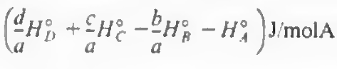
Q닷: 반응기에 가해진 열
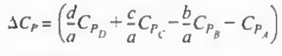
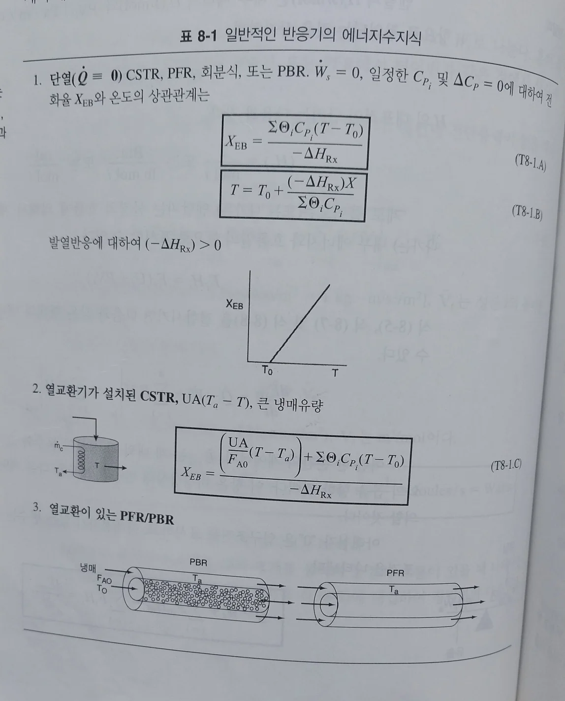 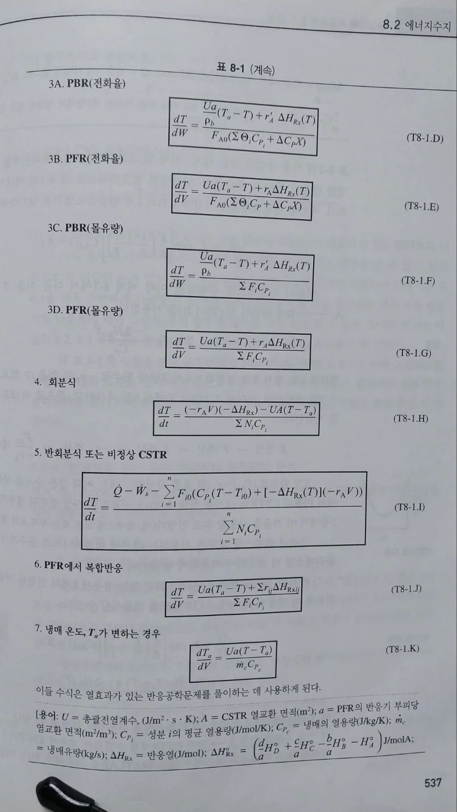 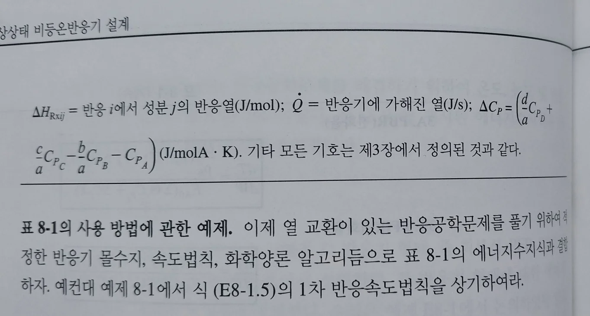
참고: 표 8.1만으로 충분할까?표 8.1은 비등온 반응기 설계에서 에너지 수지식을 요약한 것으로, 다양한 반응기에 대해 필요한 수식을 간략히 정리해 두었기 때문에 실무적인 설계나 문제 풀이에 매우 유용합니다. 하지만, 몇 가지 고려사항이 있습니다.표 8.1만으로 충분한 경우
표 8.1로 부족할 수 있는 경우어떻게 접근하는 것이 좋을까?
|
각 식의 유도
왜 표 8.1의 식들을 모두 유도하려고 하는가? 먼저 유도과정은 사실 중요하지 않다. 열교환이 있는 반응공학문제를 풀때는 몰수지, 속도식, 화학양론을 결합하면 V와 X가 적분 변수인 식이 나오며 추가로 압력과 온도에 관한 텀이 나온다. 이때 대부분의 반응에는 온도변화가 수반되므로 온도와 V또는 X를 관련지어주는 에너지수지식을 반드시 사용해야 한다.
따라서 풀려는 문제에 맞는 적절한 에너지수지식을 위 표에서 고르고 결합하는 것이 더 중요한 문제이다. 이에 관해 사용법을 알아보자. 아래 문제는 위에 나온 예제와 정확히 똑같은 문제이다
| Q: 다음과 같은 액상 비가역 기초반응에서 70%의 전화율을 얻는데 필요한 PFR 반응기의 부피를 계산하여라. 이제까지 만났던 문제와 다른 게 없다. 당연히 몰 수지, 속도식, 화학양론을 써야한다. 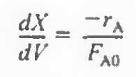 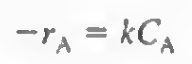 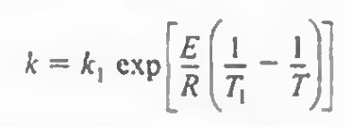 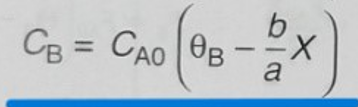 결합시 다음과 같다. 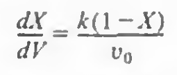 -먼저 액상이므로 부피는 온도에 의해 변하지 않는다. -그러나 속도상수 k는 온도의 함수이다. 아레니우스 식을 대입하면 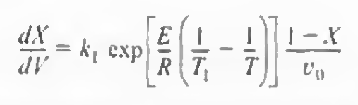 위 케이스에 에너지 수지식을 적용해보자. 이때 표에서 적절한 에너지수지식을 찾아야 한다. 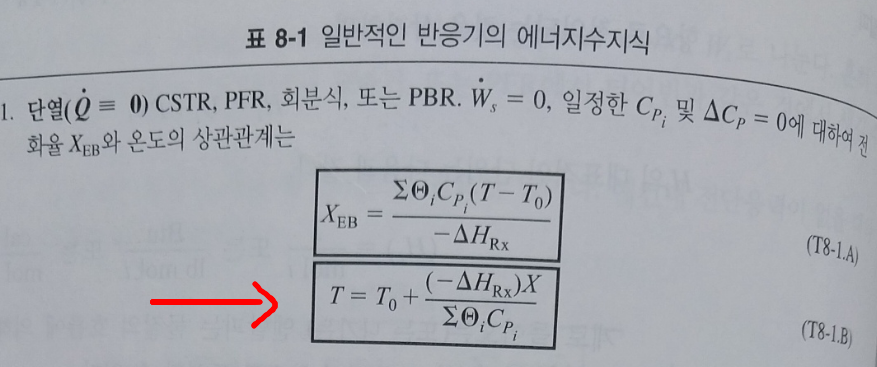 이때 단열이고 열용량이 일정하다고 가정시 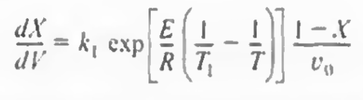 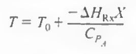 위의 식은 dX,dV,T의 함수이고 밑의 식은 T와 X의 관계를 나타내준다. 이를 결합시 위의 식에서 T가 X에 관한 항으로 나타내어져 결국 dX,dV가 변수가 되므로 적분가능해진다. 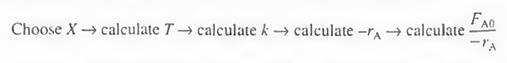 |
이제 표 8.1의 식들을 하나하나 유도해보자.
기초 1) 정상상태 몰유량의 분석
정상상태에서 에너지 수지는 다음과 같다.
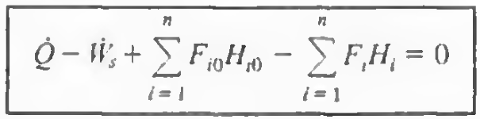
이때 엔탈피 항을 분석해보면, 들어오는 유입 및 유출 텀은 다음과 같이 나타내진다.
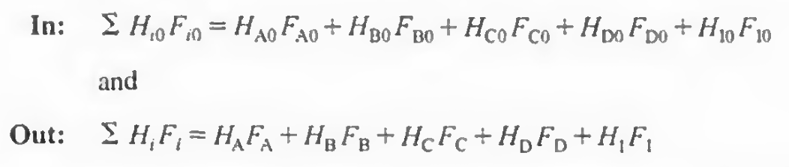
여기서 Fi0 와 Fi간의 관계는 다음과 같다.
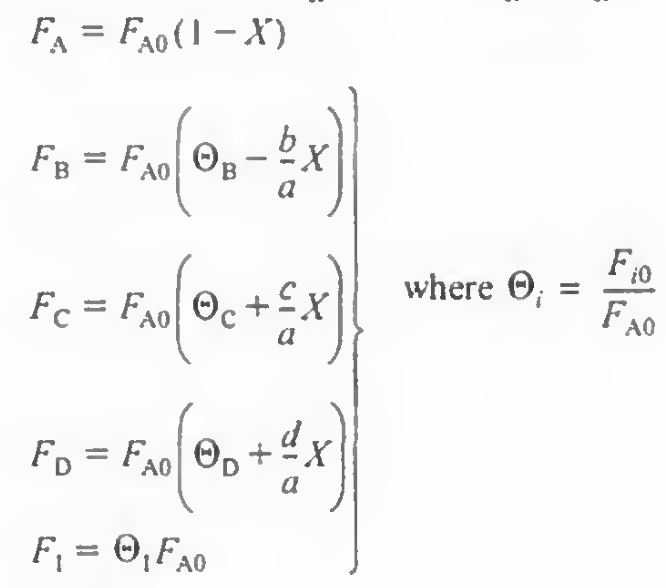
이걸 대입할 시 유입 유출 텀은 다음과 같아진다.
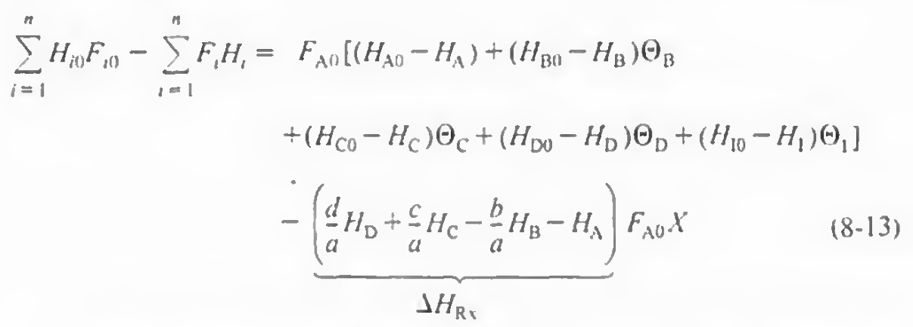 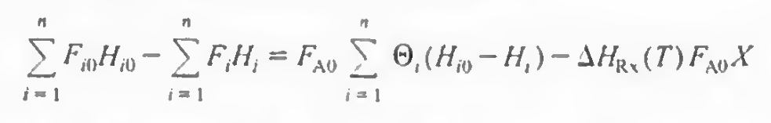 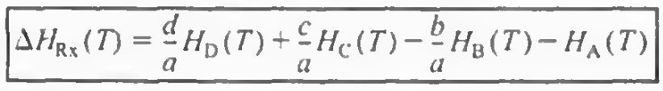
이제 에너지 수지에 적용하면 최종적으로 다음과 같아진다.
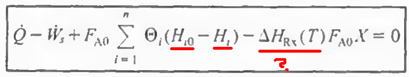
아직 엔탈피 텀이 뭔지 이해되지 않았다.
기초 2) 엔탈피의 분석
엔탈피는 기준(보통 25도)에서 값이 지정되어 있고, 여기서 변화값을 더하여 특정 온도에서의 엔탈피 값을 산출한다.
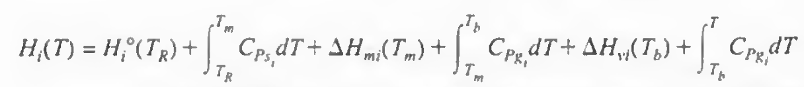
일반적으로 상변화가 없다면 엔탈피는 다음과 같다.
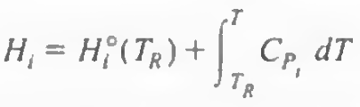
열용량 Cp는 일정하거나, 또는 온도의 함수로써 주어진다. 이 교재에서는 대부분 일정하다고 가정한다.
엔탈피 항 대입시 다음과 같이 바뀐다.
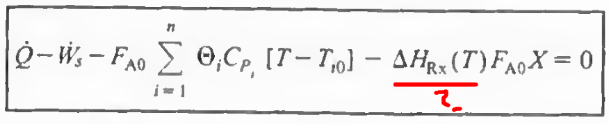
이제 마지막 Hrx 텀만 알아보면 된다.
참고:언제 열용량이 일정하다고 가정할 수 있을까?
언제 열용량이 일정하다고 가정할 수 있을까?
다음 조건에서는 열용량을 일정하다고 가정하는 것이 비교적 적절합니다:
1. 온도 변화가 작을 때
- 반응이 일어나는 동안 온도 변화가 크지 않은 경우 (ΔT\Delta T가 작음), 열용량의 온도 의존성을 무시해도 결과에 큰 영향을 주지 않습니다.
- 예: 상온 근처에서 작동하는 반응기나, 특정 온도 구간에서 열용량이 거의 일정한 물질을 다룰 때.
2. 열용량의 변화가 미미할 때
- 많은 고체와 액체의 열용량은 온도에 따라 천천히 변하기 때문에, 일반적인 온도 범위에서는 일정하다고 간주할 수 있습니다.
- 예: 물, 금속 등은 비교적 일정한 열용량을 가지며, 설계에서 충분히 사용할 수 있습니다.
3. 단순 모델링이 필요할 때
- 초기 설계 단계나 간단한 계산에서는 열용량의 변화를 포함하지 않아도 충분히 신뢰할 만한 결과를 얻을 수 있습니다.
- 예: 비등온 반응기의 초기 설계 또는 경향성을 파악하기 위한 계산.
언제 열용량 변화를 고려해야 할까?
반대로, 다음과 같은 경우 열용량의 온도 의존성을 무시하면 오류가 커질 수 있습니다:
1. 온도 변화가 큰 경우
- 고온에서 낮은 온도까지 큰 온도 구간을 포함하는 경우 열용량이 상당히 변할 수 있습니다.
- 예: 기체 상태에서 열용량이 온도에 따라 급격히 변하거나, 극저온 시스템에서의 열역학 계산.
2. 기체의 열용량이 복잡하게 변할 때
- 다원자 기체의 경우, 회전 및 진동 운동이 활성화되면서 열용량이 온도에 민감하게 반응합니다.
- 예: CO2,H2OCO_2, H_2O와 같은 다원자 기체를 포함한 시스템.
3. 고정밀 계산이 필요한 경우
- 반응기에서 섬세한 열 전달 계산이 요구되거나, 최적 설계가 중요한 경우에는 열용량의 온도 의존성을 고려해야 더 정확한 결과를 얻을 수 있습니다.
- 예: 비등온 반응기에서 외부 열공급과 반응열 간의 균형을 세밀히 설계할 때.
열용량의 온도 의존성을 반영하는 방법
열용량의 온도 의존성을 반영하려면, 다음과 같은 경험적 식을 사용할 수 있습니다:
Cp(T)=a+bT+cT2+dT3C_p(T) = a + bT + cT^2 + dT^3
- a,b,c,da, b, c, d: 실험적으로 얻어진 물질별 상수.
- 적분하여 평균 열용량 또는 열에너지 변화를 계산할 수 있습니다.
결론
열용량을 일정하다고 가정하는 것은 간단한 설계나 계산에서 충분히 적합할 수 있습니다. 그러나 온도 변화가 크거나, 기체와 같은 온도 의존성이 큰 시스템에서는 열용량의 변화를 반영해야 더 정확한 결과를 얻을 수 있습니다. 문제의 목적과 정확성 요구 사항에 따라 가정을 적절히 적용하는 것이 중요합니다.
기초3)반응열을 알아내는 법
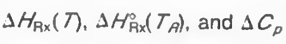
온도 T에서 반응열은 기준온도에서의 반응열에, 반응한 A의 몰당 열용량의 변화를 더하여 나타낸다.
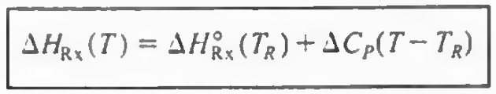 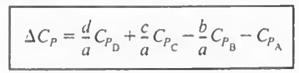
앞의 표준반응열은 표로 정리되어있고, 뒤쪽의 변화값은 계산하여야 한다.
열역학에서 이미 비슷한 작업을 했을 것이다.
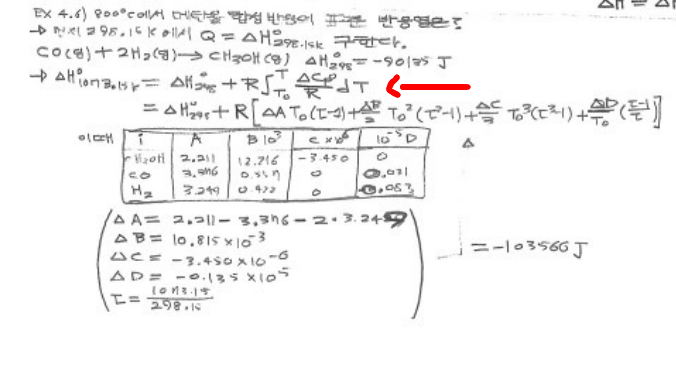
지금까지의 논의를 총합하면 다음과 같다.
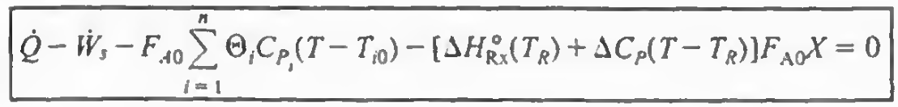
우리들이 연구할 거의 모든 계에서 반응물은 동일온도로 계에 공급될것이다. 따라서 Ti0=T0이다.
-
- 반응기 입구에서 모든 반응물이 **동일한 열 교환 장치(또는 환경)**를 통해 미리 가열 또는 냉각되었다.
- 반응기 입구에서 반응물들이 이미 균일하게 혼합되었다.
이제 여기까지 오면 에너지수지식의 분석이 끝났다. 이제부터는 각각의 조작에 적용하기만 하면 된다.
8.3단열조작
일이 없고 단열조작인 경우에 식은 다음과 같아진다.
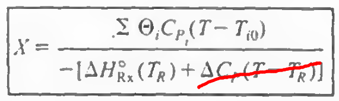
이때 온도 변화에 따른 열용량 적분값 (엔탈피 차이)항은 표준반응열에 비하면 무시할 수 있고, 따라서 그래프는 직선으로 나타난다.
**일반적으로: 표준 반응열이 큰 경우, 열용량 적분값은 상대적으로 작은 기여를 하므로 무시할 수 있습니다.
그러나 온도 변화가 매우 크거나, 반응열이 작거나, 열용량 변화가 큰 시스템에서는 열용량 적분값을 반드시 고려해야 합니다.
따라서, 이 가정은 단순화의 도구로 적합하지만, 문제의 조건에 따라 유효성을 확인해야 합니다.
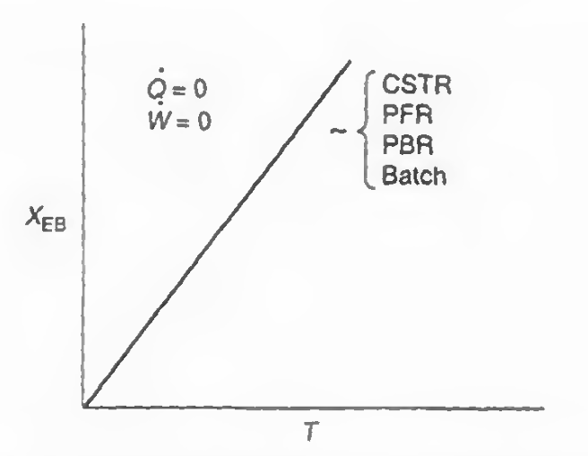
조금 더 문제풀이에 유용한 형태는 위 식에서 T와 X의 자리를 바꾸는 것이다.
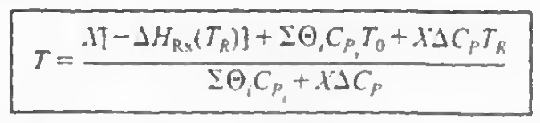
만약 열용량 변화가 없고, 순성분 A만 들어온다면 다음과 같아진다.
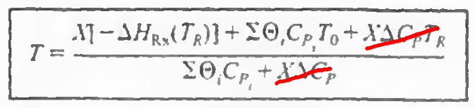 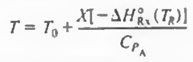
단열조작되는 PFR과 PBR을 풀기 위한 알고리즘을 표 8.2에 나타낸다.
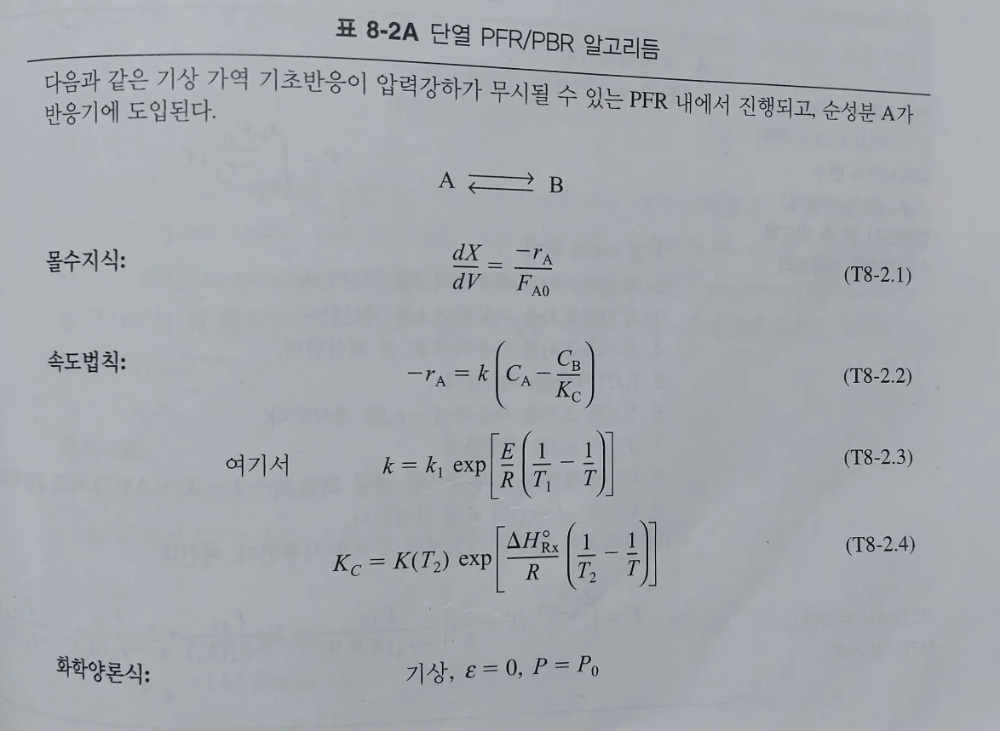 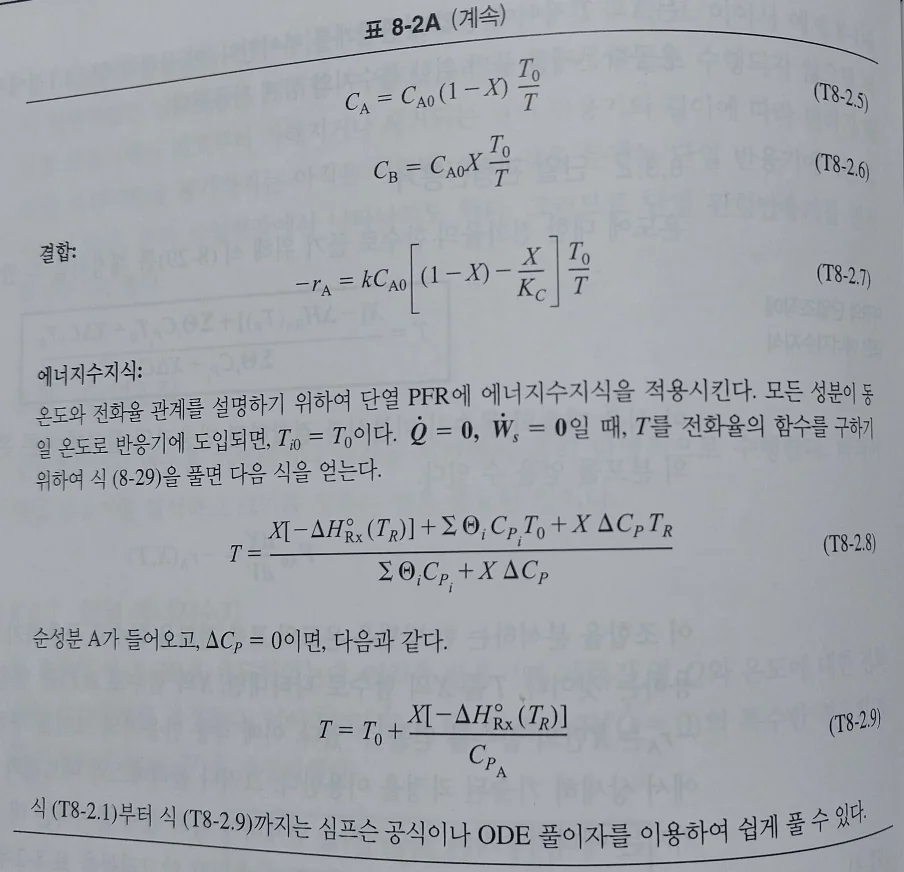
8.5평형전화율
가역반응에서 도달할 수 있는 가장 높은 전화율은 평형전화율이다. 흡열반응일때는 온도가 높아지면 전화율이 올라가고 발열반응에서는 온도가 높아지면 전화율이 낮아진다. 먼저 발열가역반응일 때, 평형전화율에 대해서 알아보자.
1)발열 가역반응의 평형전화율
가역반응에서 속도식은 다음과 같다.
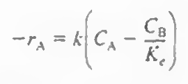
이때 평형에 도달하면 속도는 0이 된다.
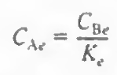
화학양론을 사용할 시
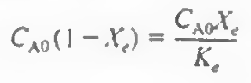
이제 Xe에 대해서 정리한다.
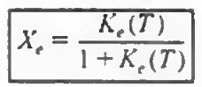